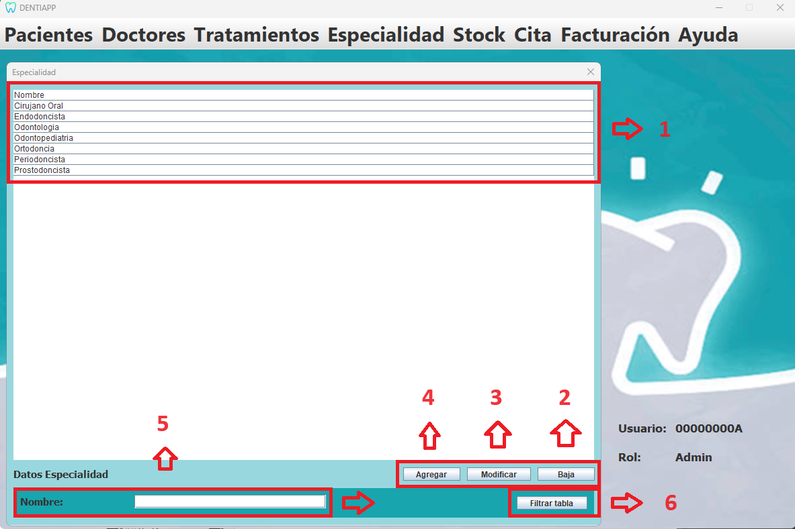

Esta es la página de Gestión de Especialidad. A ella tiene acceso el Administrador, quien podrá visualizarla e interactuar con ella.
En esta página, dicho usuario podrá ver la tabla de Especialidad. Además, podrá
interactuar con la base de datos agregando nuevas Especialidades, eliminando las ya existentes o modificando los valores de estos.
También se podrá realizar una búsqueda específica de una Especialidad en concreto mediante el botón de filtrar tabla.
A continuación, se mostrará el diseño de nuestra interfaz, señalizando y explicando la funcionalidad de los distintos
elementos destacables:

Listado de elementos:
-
Tabla:Está conectada a la base de datos "Especialidad", y nos permite visualizar el
contenido de esta. Presenta una funcionalidad especial al hacer doble click sobre una de sus filas, rellenando los cuadros
de texto de la parte inferior con el contenido de la Especialidad seleccionada.
-
Botón "Baja":Este botón nos permite eliminar una Especialidad de la tabla, realizando al mismo
tiempo una consulta DELETE sobre la tabla de la base de datos. Para eliminar una Especialidad, primero se deberá seleccionar
haciendo doble click sobre ella en la tabla. Acto seguido, se pulsa este botón y la Especialidad se eliminará.
-
Botón "Modificar":Sirve para modificar los datos de una Especialidad de la base de datos
mediante una consulta UPDATE. Para ello, seleccionaremos dicha Especialidad haciendo doble click sobre ella.
Después, usando los cuadros de texto en los que se posicionan los datos, cambiaremos la información a nuestro placer.
Por último, se pulsará sobre el botón y se habrá modificado la base de datos con éxito.
-
Botón "Agregar":Nos permitirá insertar una Especialidad en la base de datos de forma cómoda, realizando una consulta INSERT.
Simplemente se deben rellenar los datos en los cuadros de texto, pulsar el botón, y la nueva Especialidad se habrá
introducido satisfactoriamente en la base de datos.
-
Cuadro de texto "Nombre": En él se mostrará o se escribirá el nombre de la Especialidad con el que
queramos trabajar.
-
Botón "Filtrar tabla":Este botón nos permitirá buscar una Especialidad en específico de la tabla, en
el caso de que queramos hacer una comprobación y nuestra tabla contenga muchos elementos. Para hacer uso de él, primero
pulsamos sobre él y se nos desplegará un cuadro de texto en el que tendremos que introducir la Especialidad que queremos
buscar, escribiéndo su nombre como condición de búsqueda. Al darle a confirmar, la tabla se actualizará mostrando únicamente
la Especialidad cuyo nombre coincida con el introducido.